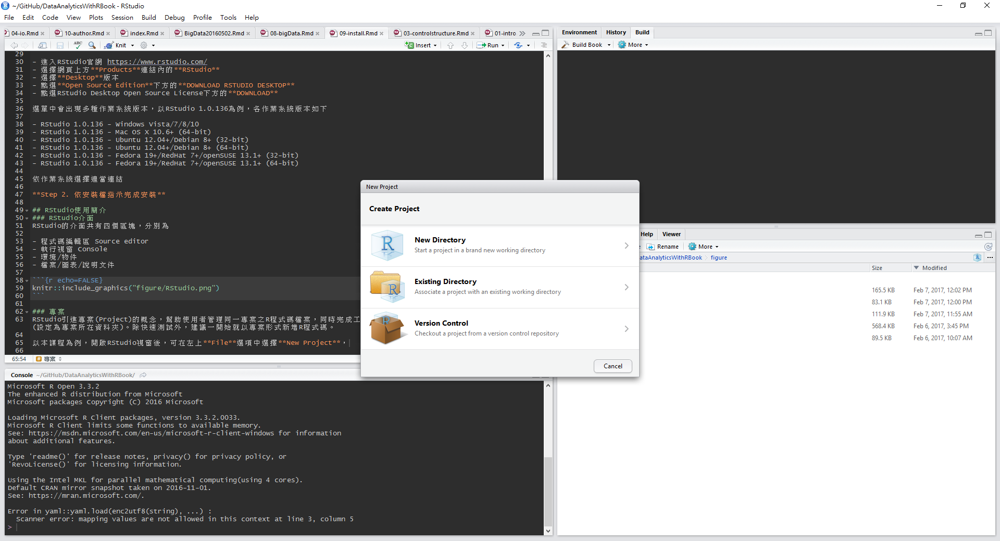
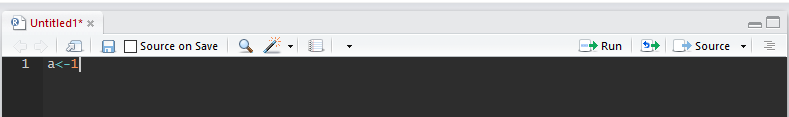

11 軟體安裝介紹
本章節將介紹R與RStudio的安裝與基本使用方式
11.1 R安裝
R語言是一種自由軟體程式語言，主要用於資料分析與統計運算，2000年時終於發表R 1.0.0，有關R語言的發展歷史可參考維基百科。
安裝步驟如下:
Step 1. 從R的官網下載安裝檔
- 進入R官網 https://www.r-project.org/
- 選擇Download下方的CRAN連結
- 進入CRAN子網頁後，請選擇離所在地最近的載點，以臺灣桃園為例，可選擇元智大學 ( Department of Computer Science and Engineering, Yuan Ze University) 的載點。
進入下載網頁後，可看到多個選項:
- Download R for Linux
- Download R for (Mac) OS X
- Download R for Windows
依作業系統選擇適當連結後，點選base (Binaries for base distribution)，下載最新版本的R安裝檔。
Step 2. 依安裝檔指示完成安裝
11.2 RStudio安裝
RStudio是R語言的IDE，屬於免費自由軟體，提供一般桌面板與伺服器版，以下介紹桌面板安裝方式，伺服器版安裝可參考Chapter 10。
Step 1. 從RStudio的官網下載安裝檔
- 進入RStudio官網 https://www.rstudio.com/
- 選擇網頁上方Products連結內的RStudio
- 選擇Desktop版本
- 點選Open Source Edition下方的DOWNLOAD RSTUDIO DESKTOP
- 點選RStudio Desktop Open Source License下方的DOWNLOAD
選單中會出現多種作業系統版本，以RStudio 1.0.136為例，各作業系統版本如下
- RStudio 1.0.136 - Windows Vista/7/8/10
- RStudio 1.0.136 - Mac OS X 10.6+ (64-bit)
- RStudio 1.0.136 - Ubuntu 12.04+/Debian 8+ (32-bit)
- RStudio 1.0.136 - Ubuntu 12.04+/Debian 8+ (64-bit)
- RStudio 1.0.136 - Fedora 19+/RedHat 7+/openSUSE 13.1+ (32-bit)
- RStudio 1.0.136 - Fedora 19+/RedHat 7+/openSUSE 13.1+ (64-bit)
依作業系統選擇適當連結
Step 2. 依安裝檔指示完成安裝
11.3 RStudio使用簡介
11.3.1 專案
RStudio引進專案(Project)的概念，幫助使用者管理同一專案之R程式碼檔案，同時完成工作路徑的設定 (設定為專案所在資料夾)。除快速測試外，建議一開始就以專案形式新增R程式碼。
以本課程為例，開啟RStudio視窗後，可在左上File選項中選擇New Project後，依需求選擇New Directory或Existing Directory

若選擇的是New Directory，則會出現下列三個選項
- Empty Project
- R Package
- Shiny Web Application
若是新增一般分析專案，選擇Empty Project後，輸入專案路徑與專案名稱，完成專案新增。

完成專案新增後，在專案內新增R程式碼檔案(File -> New file -> R Script)後，程式碼編輯區 Source editor就會出現在左上角。
11.3.2 RStudio介面
RStudio的介面共有四個區塊，分別為
- 程式碼編輯區 Source editor
- 執行視窗 Console
- 環境/物件
- 檔案/圖表/說明文件
剛開啟一個新的RStudio視窗時不會有程式碼編輯區 Source editor，必須要新增專案後才會出現。

建議使用方式如下:
- 在左上方程式碼編輯區 Source editor撰寫程式碼
- 完成程式碼撰寫後，將需要執行的程式碼反白，點選Run (見下圖)，執行程式碼
- 除了反白外，將游標移至需要執行的程式碼，，點選Run (見下圖)也可執行該行程式碼
- 程式碼會在左下方Console視窗執行，顯示結果
- 如果有畫圖，會出現在右下方視窗
- 可在右上方視窗檢查所有變數

RStudio的其他使用細節，可參考RStudio IDE Cheat Sheet